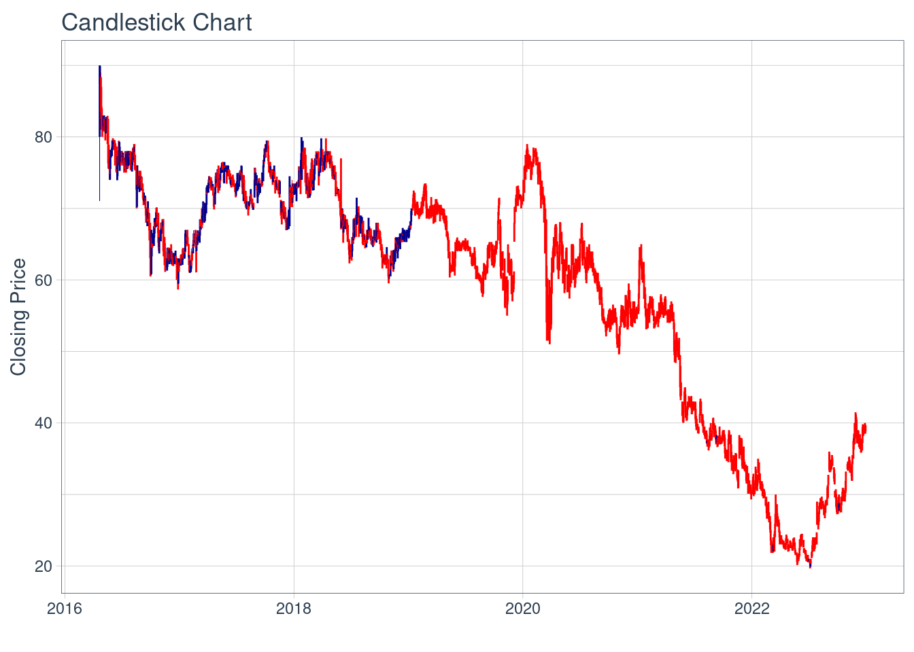
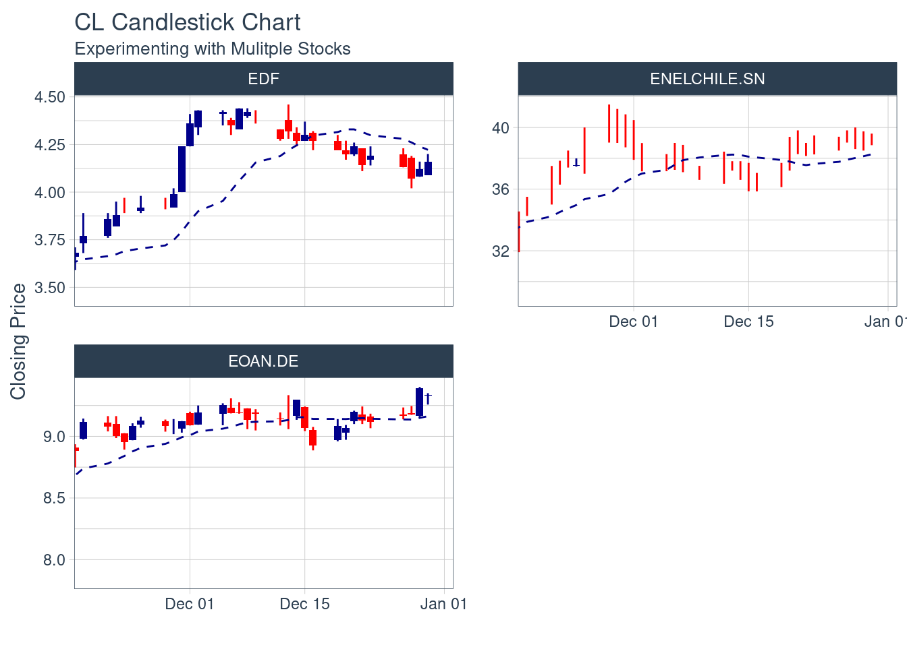

Hito 3 Proyecto
Descripción Activo y Contexto (Hito 1)
Hito 3
Gestión financiera
Grupo 7: Energía
Integrantes:
Juan Ayala
Benjamín Ruiz Tagle
Fernando Manzano
Profesor:
Sebastián Cea
Fecha de entrega: Lunes 13 de Noviembre 23:59.
Definición
Definir y describir activo a estudiar, acompañar con datos (tributa a indicador de Contexto) y con referencias científicas realizando una investigacion relacionada a articulos ubicados en la base de datos de Web of Science, con una calificacion Q1-Q2 y referenciada varias veces (Esto se verá en el tutorial de la semana 5).
El activo a evaluar será Enel Chile S.A, por su parte, tiene como objetivo ” En 2040, 10 años antes de la meta que marcaban los planes anteriores, la flota de Enel será 100 % renovable …alcanzará el Cero Neto” - El futuro está cerca | Enel Green Power. Esta meta de alcanzar en 2040 es 10 años más ambiciosa que el compromiso hecho por 70 países de lograrlo en 2050 - Llegar a cero emisiones netas de carbono para 2050, ¿es posible? | Noticias ONU.
Como se ha mencionado en la revista Sustainability Science desde más de 10 años, existe una crisis en sostenibilidad en la que los sectores de negocios que son incapaces de colaborar para alcanzar estas metas - Industry and academia for a transition towards sustainability: advancing sustainability science through university–business collaborations (Sustainability Science). Mientras que Enel tiene objetivos de sostenibilidad a grandes rasgos en diversos países como Italia, España, Estados Unidos, Brasil, Colombia y Chile.
La realidad es que la sostenibilidad es el negocio del futuro y un activo como Enel Chile S.A se encuentra mucho más avanzado en este rubro que su competencia. Con una mision muy clara de abrir el mundo de la energía a nuevas tecnologías, abrir la gestión de la energía a las personas, abrir la posibilidad de nuevos usos de la energía, abrirse a un mayor número de alianzas.
El activo ENIC tiene un valor promedio para el intervalo igual a 4
ENIC %>%
ggplot(aes(x = date, y = close)) +
geom_candlestick(aes(open = open, high = high, low = low, close = close)) +
labs(title = "Candlestick Chart", y = "Closing Price", x = "") +
theme_tq()
Motivación
Establecer la relevancia o potencial interés específico del activo que justifique el porque realizar la investigacion a este activo y no a otros. Argumentar haciendo referencia a datos o noticias actuales que motiven el estudio de este activo.
Se habla de que la Energía renovable será el futuro de la humanidad, debido a que sin esta, se tendrían que seguir utilizando materias primas no renovables como el petróleo para el funcionamiento de la humanidad, lo que ocasiona un aumento en las emisiones de gases de invernadero que genera un aumento en el impacto del efecto invernadero.
Entonces las energías renovables son fuentes de energías inagotables, limpias y que se pueden obtener de cualquier lugar del mundo, además que estas cada vez se van volviendo más baratas de obtener mientras que por el contrario, las energías fósiles se van volviendo más caras. Según los pronósticos de la AIE, Agencia Internacional de la Energía, la participación de las renovables en el suministro eléctrico global pasará a ser el 44% en 2040, principalmente a través de las tecnologías eólica y fotovoltaica. Por lo que conocer y estudiar estas nuevas energías es clave debido a que serán los próximos suministros para el funcionamiento de un planeta más sano y eficiente.
La industria de la energía abarca la generación de electricidad a partir de paneles solares, turbinas eólicas y otras tecnologías. En cuanto al mercado, podemos analizarlo cuantificando su crecimiento como variable puesto que es indicativo de los prospectos futuros del mercado.
Es una industria que se ha tomado su tiempo en iniciar debido a los altos costos al momento de implementar la tecnología, con bajas ganancias, esto ha sido cierto para gran parte de las diversas energías renovables existentes, en especial la fotovoltaica y geotérmica. Durante el 2016, el aumento de la capacidad instalada de energía solar fue mayor que cualquier otra fuente. Desde 2010, los costes de nuevas tecnologías se han reducido un 70% para energía fotovoltaica y en un 25% para la energía eólica.
Según la Agencia Internacional de Energía (AIE) este mercado va en camino de acelerarse los próximos años(IEA 2021 Renewables). El informe prevé que el 95 % del crecimiento de la capacidad mundial de generación de energía proceda de las energías renovables para finales de 2026. Es por esto, que se ha observado un crecimiento constante de este sector y con los nuevos avances tecnológicos se puede estimar un aumento exponencial de esta industria.
Contexto
Ingesta datos del activo y provee un análisis de estadística descriptiva simple junto con el análisis de una variable económica de contexto. Ejemplo: Si el activo es una minera, la variable puede ser el precio del metal. Acompañar este analisis con graficos, riesgos, horizonte de inversion, rentabilidad del activo, entre otros.
Los siguientes datos fueron extraídos de la Bolsa de comercio de Santiago, Yahoo Finance y S&P Global Ratings:
| ENEL CHILE S.A. | |
| Valor | 54,1 |
| Variación | 0,15 |
| N° Accionistas | 5.999 |
| Market Cap (mil millones) | 4,347 |
| Riesgo | BBB |
| Fecha | 28-09-2023 |
Tabla 1: Datos Enel Chile s.a.
Fuente: Elaboración propia
Variables económicas de contexto importantes que puede afectar a empresas como Enel, en su rentabilidad y operación, en el sector de la energía son por ejemplo:
Precio de la Electricidad: El precio de la electricidad impacta directamente en los ingresos de Enel Chile, ya que la empresa opera en el sector energético. Variaciones en los precios pueden influir en la rentabilidad y competitividad de la compañía, afectando su capacidad para generar ingresos consistentes
Costo de los Combustibles o Recursos Energéticos: El costo de los combustibles o recursos energéticos utilizados por Enel Chile afecta sus costos operativos. Fluctuaciones en estos costos pueden incidir en la rentabilidad de la empresa, especialmente en comparación con fuentes de energía más económicas o sostenibles.
Política Energética y Regulación: Cambios en la política energética y regulaciones gubernamentales pueden tener un impacto significativo en las operaciones y proyectos de Enel Chile. Decisiones gubernamentales pueden afectar la viabilidad económica de ciertos proyectos, las tarifas reguladas y la entrada o salida de competidores en el mercado.
Demanda de Energía: La demanda de energía es fundamental para el éxito de Enel Chile. Una demanda creciente puede aumentar la utilización de sus instalaciones y servicios, mientras que una demanda decreciente puede resultar en subutilización de activos, afectando la eficiencia operativa y los ingresos.
Política Monetaria y Cambios en Tasas de Interés: La política monetaria y las variaciones en las tasas de interés pueden afectar el costo del endeudamiento de Enel Chile y la valoración de sus inversiones. Cambios en las tasas de interés impactan los costos financieros y la atractividad de las inversiones en el sector energético.
Tendencias en Energías Renovables: Las tendencias en energías renovables tienen un impacto directo en la estrategia de Enel Chile, que se ha comprometido con la transición hacia fuentes de energía sostenibles. Cambios en la adopción y preferencia por energías renovables pueden influir en la demanda de los servicios de Enel Chile y su posición competitiva en el mercado.
Cualquier corte o falla similar en las instalaciones de transmisión podría interrumpir el negocio de la Compañía, lo que afectaría adversamente sus resultados operacionales y situación financiera.
“El 24 de septiembre de 2011, casi diez millones de habitantes de la zona central de Chile sufrieron un”apagón” (lo que afectó a más de la mitad de población chilena), debido a una falla en la subestación Ancoa de Transelec de 220 kV, lo que produjo una interrupción del servicio en dos líneas de 500 kV del SIC y llevó a que se cayera el programa computacional de recuperación remota que usa el Centro de Despacho Económico de Carga (“CDEC”) para operar la red. Ese “apagón”, que se extendió por dos horas, dejó en evidencia la fragilidad del sistema de transmisión y su necesidad de ampliarse y que se introduzcan mejoras tecnológicas para así aumentar su confiabilidad.” - Factores de Riesgo Enel Chile.
Enel Chile está comprometida a través de su estrategia de negocio con seis Objetivos de Desarrollo sostenible (ODS).

Conexión entre las seis macro categorías de la taxonomía de riesgos, la integración son los aspectos ASG y los ODS.
- Eventos Climáticos Extremos

Análisis de Largo Plazo
Caracterización deuda (Aplicación cap. 15)
Describir el activo especificando en que realiza sus inversiones (por tipo de instrumento). Especificar sus acciones comunes, preferentes y bonos relacionados aplicando lo aprendido en el capitulo respectivo.
Inversiones de Enel Chile:
Infraestructura de Generación.
Red de Distribución y Transmisión
Adquisición de Empresas y Activos.
Inversiones en Energías Renovables
Instrumentos Financieros
Acciones Comunes y Preferentes
El capital de la empresa se encuentra distribuido en un total de 69.166.557.220 acciones, las cuales no tienen un valor nominal específico y todas pertenecen a una única serie. Cada acción otorga un derecho de voto y no existen acciones que confieran un derecho de veto por parte del Estado.
El 7 de julio de 2020, Enel SpA anunció un aumento en su participación en Enel Chile a través de dos transacciones de intercambio. Se adquirieron 1.502.106.759 acciones ordinarias y 11.457.799 American Depositary Shares (ADS), cada uno representa 50 acciones ordinarias.Enel SpA incrementó su participación en un 3%, alcanzando una propiedad total del 64,93% en el capital accionario de Enel Chile.
Bonos Relacionados
En Junio de 2018 Enel Chile S.A realizó una colocación de bonos de US $1.000 millones, con valor nominal de un mínimo de US $1.000 y múltiplos de US $1.000 por arriba del mínimo. Cupón de una tasa de interés de 4,875% al año en dólares con intereses a pagar dos veces al año.
Caracterización de emisiones históricas (Aplicación cap. 20)
Describir el proceso de emision de acciones paso a paso del activo seleccionado, caracterizando el tipo de colocacion que utilizaron en contraste con el procedimiento basico realizado en el capitulo respectivo.
El proceso de emisión de acciones de una empresa como Enel Chile generalmente implica la venta de nuevas acciones al público o la colocación de acciones ya existentes en el mercado.
Proceso de Emisión de Acciones de Enel Chile
1. Evaluación de Necesidades de Capital:
Enel Chile, como cualquier empresa, primero debe evaluar si necesita recaudar capital adicional para financiar proyectos, inversiones o para otros fines corporativos. Esto puede implicar la identificación de las cantidades de capital necesarias y los plazos para su uso.
2.Determinación del Tipo de Acciones a Emitir:
La empresa debe decidir si emitirá nuevas acciones (oferta primaria) o si venderá acciones existentes en manos de accionistas actuales (oferta secundaria).
En el caso de una oferta primaria, se crean nuevas acciones y se ponen a la venta. En una oferta secundaria, los accionistas existentes venden sus acciones al público.
3. Selección de Bancos de Inversión y Asesores Legales:
Enel Chile generalmente trabajaría con bancos de inversión y asesores legales para llevar a cabo la emisión de acciones.
4.Preparación de Documentación Legal y Regulatoria:
Se elaboran prospectos de oferta y otros documentos legales y regulatorios que describen los términos y condiciones de la emisión de acciones. Estos, deben ser aprobados por las autoridades regulatorias (CMF).
5. Registro y Aprobación Regulatoria:
Enel Chile debe presentar los documentos de la oferta a las autoridades regulatorias pertinentes, como la Superintendencia de Valores y Seguros (SVS) en Chile. Estas autoridades revisarán y aprobarán la oferta si cumple con las normativas y requisitos.
6.Mercado de Capitales:
Una vez aprobada la oferta, las acciones se ponen a la venta en el mercado de capitales. Enel Chile puede optar por listar sus acciones en la Bolsa de Santiago.
7.Oferta Pública:
En el caso de una oferta primaria, se lleva a cabo una oferta pública en la que los inversionistas interesados pueden comprar las nuevas acciones.En una secundaria, los accionistas existentes venden sus acciones a través del mercado secundario.
8. Liquidación y Asignación:
Se realiza la liquidación de la oferta y se asignan las acciones a los inversores que participaron en la compra.
Caracterización de la Colocación
La colocación de acciones de Enel Chile puede ser parte de una estrategia corporativa más amplia de Enel SpA para aumentar su participación en la subsidiaria o para recaudar capital adicional.
Esto, a menudo, involucra acuerdos directos entre Enel SpA y Enel Chile, y puede no seguir un proceso de emisión de acciones tradicional en el mercado abierto. Enel SpA puede optar por comprar directamente acciones de Enel Chile o intercambiar instrumentos financieros, como se mencionó en tu pregunta anterior.
En resumen, el proceso de emisión de acciones de Enel Chile seguiría los pasos generales,pero debido a la relación con su empresa matriz, Enel SpA, la colocación de acciones podría ser parte de estrategias corporativas más complejas que no siguen el procedimiento básico de una oferta pública tradicional.

Relación con activos derivados
Describe un activo derivado relacionado, mostrando datos de su evolucion. Tambien mencionar porque es importante este derivado para la activo en cuestion.
Aplicar procedimiento de valoración de un derivado por inclusión en estructura de retornos (a profundizar en tutorial de la unidad de Derivados).
Enel Chile siguiendo su política de gestión de riesgos, realiza fundamentalmente contrataciones de derivados de tasas de interés y tipos de cambio. El Grupo clasifica sus coberturas en:
- Coberturas de flujos de caja: Aquellas que permiten cubrir los flujos de caja del subyacente cubierto.
- Coberturas de valor razonable: Aquellas que permiten cubrir el valor razonable del subyacente cubierto.
- Derivados no cobertura: Aquellos derivados financieros que no cumplen los requisitos establecidos por las NIIF para ser designados como instrumentos de cobertura, se registran a valor razonable con cambios en resultados (activos financieros mantenidos para negociar)
Reporte grupal
Definicion de un balance de portafolio sobre los 3 activos del grupo, donde se especifique los pesos de cada activo de tal forma que maximize el retorno de la cartera.
Para poder asignar el porcentaje que se le dará a los activos en el portafolio es necesario tener en consideración algunos factores, a modo de entender y desarrollar un análisis claro.
Los tres activos del portafolio se encuentran definidos y con sus respectivos datos en la siguiente tabla:
| Market cap (millones de pesos) | Beta | Ratio Sharpe | |
| Enel Chile | $ 4.070 | 0,72 | -0.0751 |
| Banco de Chile | $ 10.269 | 0,14 | -0.0419 |
| Cencosud shopping | $ 2.286.000 | 0,64 | -0.0497 |
Tabla 2: Datos generales de los activos
Fuente: elaboración propia
Análisis Activos
Primero que todo, vemos una capitalización de mercado en la que Cencosud Shopping lidera por mucho. En términos de Beta, los tres activos son relativamente seguros, el Banco de Chile es el que tiene el beta más bajo, entendible considerando las regulaciones y la manera en la que opera un banco. Por último observamos que los tres activos tienen un ratio sharpe negativo de los últimos tres meses lo que indica que su rendimiento es menor al de la rentabilidad sin riesgo.
Debido a que Enel tiene el Beta más alto, el Ratio Sharpe más negativo y la menor capitalización de mercado, se le va a otorgar el menor % en la asignación.
Como el Banco de Chile tiene un Beta muy bajo y similar Ratio Sharpe a Cencosud Shopping, estableceremos en ambos el mismo % en la asignación, el objetivo de esta decisión es mantener al Banco de Chile como la inversión más segura, que estabilice el riesgo del portafolio.
Desde la perspectiva del riesgo en tiempos como estos con guerras en Europa y la incertidumbre global, se cree que los activos más ligados a la energía sean más riesgosos debido a la fluctuación en activos como el petróleo o incluso con restricciones en torno al medio ambiente en el mundo y Chile. Sumado a esto los bancos en periodos de estancamiento como lo está chile, suelen tener un riesgo un poco más alto en comparación con las acciones inmobiliarias que suelen no tener fluctuaciones muy altas debido a la constante alza de la tasa de ocupación como sucede en CENCOSUD SHOPPING.
En el último trimestre en comparación a los mismos meses anteriores del año pasado CENCOSUD SHOPPING aumentó sus utilidades en un 99,6% gracias al incremento de la tasa de ocupación lo que significó que tuviera una rentabilidad anual de su acción “CENCOSHOPP” de 35% por lo que se le va a dar un peso más grande en el portafolio.
Asignación Portafolio
| % asignación | |
| Enel | 20% |
| Banco de Chile | 30% |
| Cencosud Shopping | 50% |
| 100% |
Modelo Binomial de Jarrow-Rudd
Movimiento hacia arriba del Árbol Binomial
Con probabilidades fijas, todos los inputs que describen el movimiento de precios, como la volatilidad σ, la tasa de interés libre de riesgo “r” y el rendimiento “q”, se reflejan en el tamaño de los movimientos hacia arriba y hacia abajo.
Donde Δt es la duración de un paso en años, calculada como el tiempo de vencimiento de la opción t dividido por el número de pasos del modelo n:
Los multiplicadores de movimiento hacia arriba y hacia abajo, denotados como u y d, se utilizan para generar el árbol de precios subyacentes, partiendo del precio subyacente actual S y llegando a la fecha de vencimiento de la opción. Desde cada nodo en el árbol, el precio puede subir (S · u) o bajar (S · d) hacia uno de los dos nodos en el siguiente paso.
Los precios subyacentes en la fecha de vencimiento (el último paso en el árbol) se utilizan para calcular los pagos de la opción en la fecha de vencimiento, que constituyen el último paso en el árbol de precios de la opción.
Luego, el resto del árbol de precios de la opción se calcula hacia atrás, llegando finalmente a su primer nodo, que es el precio actual de la opción.

s : precio inicial del stock
k : strike price
t : tiempo de expiración
v : volatilidad
rf : tasa libre de riesgo
cp : +1/-1 para call/put
am : True/False for American/European
n : caminos binomiales
Resultados
Para analizar ambos modelos, los parámetros obtenidos se sacan directamente en tiempo real desde Yahoo Finance usando la librería yfinance.
| Tasa de interés sin riesgo (r) | 0.237329 |
| Sigma (Volatilidad) | 0.5461213415186053 |
| S0 (Precio actual) | 3.009999990463257 |
| K (Precio de ejercicio) | 2.5 |
| T (Tiempo hasta vencimiento en años) | 0.01984126984126984 |
| Precio de la opción [Black-Scholes] | 0.5222007112063634 |
| Precio de la opción [Jarrow-Rudd] | 0.5221770004756079 |
El precio de la opción de compra (call) calculado con el modelo de Black-Scholes es de aproximadamente 0.5222, mientras que el modelo de Jarrow-Rudd da un precio de aproximadamente 0.5222.
La diferencia entre los dos precios es mínima (0.0000237107), lo que indica una cercanía sustancial entre los valores calculados por ambos modelos en este caso. Esta pequeña discrepancia puede atribuirse a las diferencias en las suposiciones y métodos de cálculo específicos de cada modelo. En general, la similitud en los resultados sugiere que ambos modelos son consistentes en la valoración de la opción en esta situación particular.
Como siempre, es crucial considerar las condiciones específicas del activo subyacente, las características del mercado y las suposiciones de cada modelo al interpretar los resultados y tomar decisiones de inversión.
Comparación modelos
Para realizar una comparación entre los dos modelos se realizaron varios cálculos usando diversos tickers y graficando la diferencia porcentual entre sus resultados.

Gráfico: Diferencia porcentual entre Black-Scholes y Jarrow Rudd.
Fuente: Elaboración Propia
Podemos apreciar que la diferencia porcentual no supera el valor absoluto de 0.2%. Esto es un porcentaje bastante pequeño y muestra que ambos modelos, a pesar de ser muy distintos en su manera de calcular las opciones, son consistentes en sus resultados.